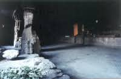
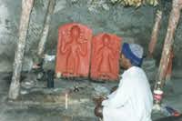
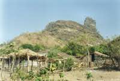

This year I had decided to trek as much as possible in the rains. To start the ball rolling, I decided to go trekking next possible Sunday -- which was June 1. It was still high summer, and the monsoons were nowhere near. The MET dept. predicted a 8-10 day delay. There had been no pre-monsoon showers -- not even a drop. Two days before, on Friday, I met Sarang Kulkarni. He asked me about my plans for trekking. I told him about Peth. He asked if he could come. I said welcome. So on Sunday morning, at 0430hrs we left. Caught the 0450 Karjat train. Reached Karjat by 0645hrs. 10 minutes to the ST stand. Unfortunately there was no bus till 0830hrs. The first bus had left at 0600hrs -- but I had misinformation(in hindsight), that there was one at 0730hrs too. Anyway that long a wait would be too much. So we took a bus going someplace but passing through Kashala -- from which the road to Ambivili forks. There are plenty of 6 seater "vikram's" available from there. They have a very reasonable fare and are the transport of choice of the locals. 50 minutes brought us to Kashala. A vikram was available with only 8 passengers in it. So they took us both and we started. People love to adjust and co-operate in a vikram, I realised. Maybe it was something to do with the pleasant open-aired ambiance. Not to mention the melodic diesel throbbing underneath. 30 minutes of pleasant journey through the outback brought us to Ambivili. One of the trails to Peth start from here. At the old hotel of Mr.Konkane we had our ritual poha and chai (his wife makes excellent poha). The local news was that no groups had passed to Peth today. We started. Much to our astonishment and dismay, the cart-track to Peth village (which lies at the base of Kothligad) was being road rolled into almost an avenue. Luckily only a few furlongs had been converted yet. But the writing is on the wall. We stuck to the shortcuts cutting directly upwards. There were signs of much activity -- the electric poles were being erected. Peth did not have electricity -- not for long it seemed. Due to the total lack of rain, the whole hillside was parched with dry trees. Here and there were a few who get green leaves in the summer, much to the improvement of the scenery. After climbing steadily we reached the "chai" plateau. "Chai" because last December we had camped here and prepared some infamous tea '-). At the narrow neck which connects this plateau with the Peth village plateau, we sat down under a small tree with thick green foliage. It was very refreshing. In the summer noon heat we walked up to Peth village. At the Patil's house, we had some water. The water situation was bad and the villagers had to fetch the water from the fort which was a 700 feet climb. After resting here for 20 minutes we started for the fort. We also arranged for our afternoon food at the patils'. The village is about 1000 feet above Ambivili. On the way up to the fort -- all the way, we passed villagers carrying washing and water to and fro from the village. Reaching up after a slow 50 minute climb, we rested in the main cave. There was a group already there -- a family. A previous group had left a lot of rubbish and there was a general grumbling against such groups. The main cave is very spacious and cool. After resting here a bit we started cleaning up the place. A couple of trekkers came up. The were from Mumbai too. Chatting with them we cleaned up the place and burned most of the stuff. It is very important that we keep these places clean. It does not take a lot of effort and we do it for our own future. The cave adjoining the main cave is a temple of the "bhairoba" deity. A old villager was sitting there performing puja and generally meditating. We got talking to him and he gave us all the local news. He showed us the old cannon. With him we circumnavigated the fort. The showed us the spot where a lone rock climber had attempted to find a route up the backside of the fort and had perished in that attempt. Most of the taka's on the fort were dry or drying. This had been a very harsh summer. Soon it was time to get down. We made a quick descent up the the Patil's village in 23 minutes. He had our lunch ready. We ate. As we had some time with us, we also slept for about 45 minutes. Then we started back towards Ambivili and -- home. At the village boundaries, we took a last look at our favourite fort and headed down. After making a rapid descent and taking all shortcuts, we reached Ambivili in 40 minutes. There at the doors of a makeshift hotel, we met our friend trekkers from the fort. Together we had some limbu-sherbet. Then we went to the bus stop and caught a vikram. It was a pleasant journey till Kashala from where another vikram took us to Karjat. At Karjat we drank some sugarcane juice, ate some vada-pav's and waited for the train. The journey back was nice with us exchanging our experiences... The usual fresh-lime-with-soda at Paras and back home. Abhijit Rao © 10 June 2003 |